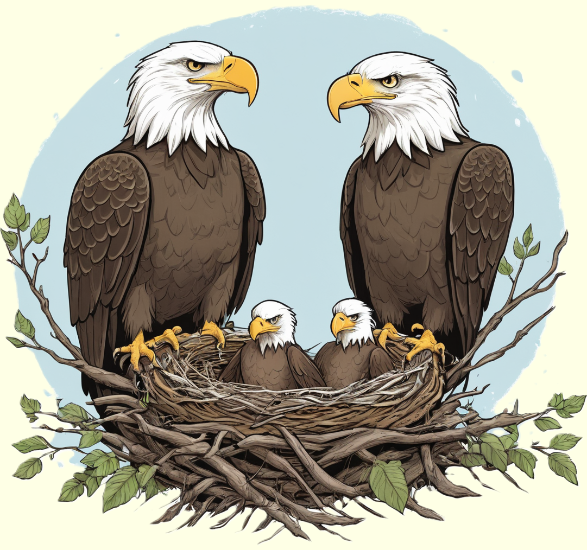

Der Weißkopfseeadler, ein majestätischer Greifvogel, fasziniert mit seinem imposanten Erscheinungsbild und seinem scharfen Blick.
Entdecke die eindrucksvolle Welt dieses Adlerkönigs der Lüfte und erfahre, wie er in den Wäldern und an Gewässern Nordamerikas lebt.

Symbole der Freiheit und Macht
Der Weißkopfseeadler, auch als amerikanischer Seeadler bekannt, ist ein majestätischer Greifvogel, der in Nordamerika beheimatet ist. Mit seinem imposanten Erscheinungsbild, einem weißen Kopf und einem kräftigen Schnabel ist er leicht zu erkennen. Weißkopfseeadler haben einen beeindruckenden Flügelspannweite von bis zu 2,3 Metern, was ihnen ermöglicht, mühelos über große Entfernungen zu fliegen. Sie sind vor allem in der Nähe von Gewässern, wie Seen, Flüssen oder Küstengebieten, zu finden, wo sie nach Fischen, Wasservögeln und anderen Beutetieren jagen.
Weißkopfseeadler sind nicht nur eindrucksvolle Jäger, sondern auch Symbole für Freiheit und Macht. Ihr majestätisches Erscheinungsbild hat dazu geführt, dass sie in den Vereinigten Staaten das nationale Wappentier sind. Diese Greifvögel sind auch für ihre imposanten Horstbauten in Baumwipfeln bekannt. Das Paar bindet sich oft für das Leben und kehrt jedes Jahr zum gleichen Horst zurück, wo es seine Jungen aufzieht. Die Rolle der Weißkopfseeadler als Spitzenprädatoren in ihren Lebensräumen unterstreicht ihre Bedeutung im ökologischen Gleichgewicht.
Eindrucksvolle Jäger und Naturschutzerfolg
Weißkopfseeadler haben eine beeindruckende Lebensdauer von bis zu 20-30 Jahren. Während dieser Zeit durchlaufen sie verschiedene Entwicklungsstadien, beginnend als Jungvögel mit einer dunklen Gefiederfarbe, bis sie schließlich das charakteristische weiße Kopf- und Schwanzgefieder eines ausgewachsenen Adlers entwickeln. Diese Greifvögel haben ausgezeichnete Augen, die es ihnen ermöglichen, ihre Beute aus großer Entfernung zu erspähen. Ihr scharfer Schnabel und die kräftigen Krallen dienen dazu, die erbeuteten Fische oder kleinen Säugetiere zu greifen und zu transportieren.
Der Weißkopfseeadler ist ein beeindruckendes Beispiel für erfolgreiche Naturschutzmaßnahmen. In den 1970er Jahren war der Bestand dieser Greifvögel aufgrund von Umweltgiften und Lebensraumverlust stark bedroht. Dank umfassender Schutzmaßnahmen, darunter das Verbot von DDT und gezielte Schutzgebiete, hat sich der Bestand erholen können. Der Weißkopfseeadler wurde 2007 von der Liste der gefährdeten Arten genommen und zeigt somit, dass gezielte Naturschutzmaßnahmen positive Auswirkungen auf bedrohte Tierarten haben können.